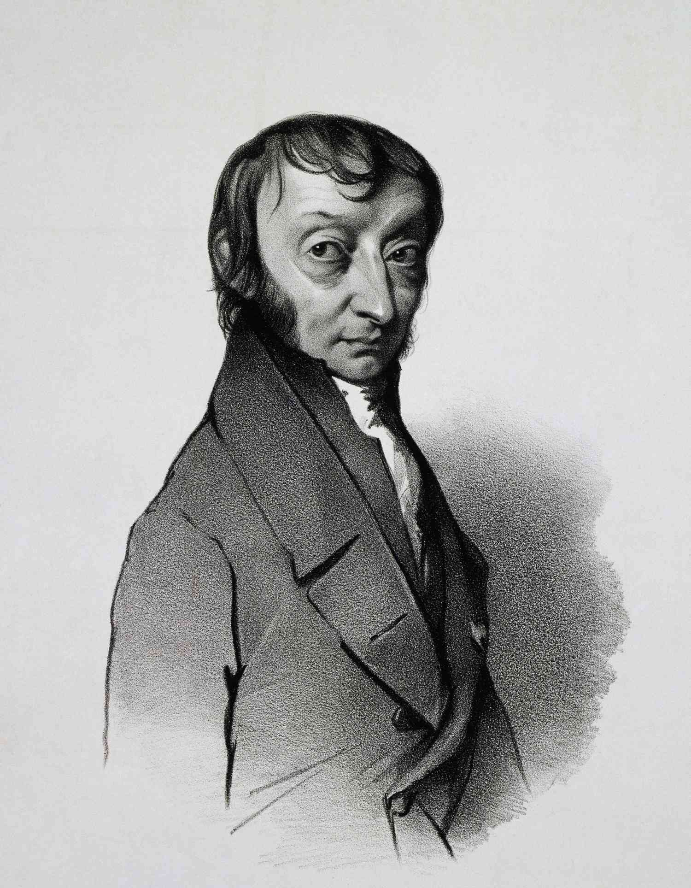
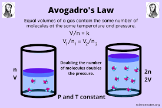

Helmenstine, A. (2022, November 29). Avogadro’s Law - Definition, Formula, Examples. Science Notes and Projects."https://sciencenotes.org/avogadros-law-definition-formula-examples/
Avogadro’s Law: Definition, Formula, Derivation, Examples. (2022, July 19). Toppr-guides. https://www.toppr.com/guides/chemistry/avogadros-law/#:~:text=A%20great%20example%20of%20Avogadro's,common%20example%20of%20Avogadro's%20law.
The Editors of Encyclopaedia Britannica. (2024, November 21). Mole | Definition, Number, & Facts. Encyclopedia Britannica. https://www.britannica.com/science/mole-chemistry
Avogadro's Law was invented by chemist Amadeo Avogadro in the early 19th century. According to (The Editors of Encyclopaedia Britannica, 2024), for many years, it was not generally accepted until the mid 19th centuries when an Italian chemist, Stanislao Cannizzaro, constructed a logical system of chemistry based on it.
Volume is directly proportional to the amount of gas (in moles).
Formula: V1 / n1 = V2 / n2
A care tire contains air inside of it. When the air that was contained in the tire gets out, the amount of air in the tire goes down. When we breathe, the air in our lung goes up and so do the volume of our lungs.
Visual Example
The exmaple above shows the relationship between temperature and volume as heat is increased.
There is .0456 mol of gas in a 2 L container. How much molecules must be added to make the volume 2.8 L?
Initial Volume (V1)= 2L
Initial molecules (n1)= 0.0456 mol
Final Volume (V2)= 2.8L
Required: Final molecules (n2)= ?
Answer: Final molecules (n2) = 0.6384 mol